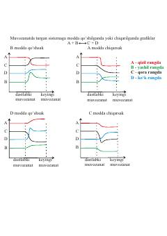

ABKimyoviy muvozanatga moddalar ta'sirini grafiklar orqali tushuntiruvchi qo'llanma.
Ushbu qo'llanma kimyoviy muvozanatdagi sistemalarga moddalar qo'shilganda yoki chiqarilganda yuz beradigan o'zgarishlarni grafiklar yordamida tushuntiradi. Unda A, B, C va D moddalarining konsentratsiyasi o'zgarishi va muvozanatning siljishi vizual tarzda ko'rsatib o'tilgan.